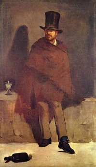
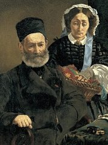

- Home
- Premières années
- Les débuts
- Les défis
- Natures mortes
- Œuvres
Édouard Manet
Premières années et Formation
Édouard Manet naît le 23 janvier 1832 au numéro 5 de la rue Bonaparte (à l'époque rue des Petits Augustins), dans le quartier Saint-Germain-des-Prés dans une famille de la bourgeoisie parisienne.
Enfance
Son père Auguste, était un haut fonctionnaire au ministère de la Justice4. Selon les biographes, il occupait le poste de chef de cabinet du garde des Sceaux5 ou de secrétaire général du ministère de la Justice6. La mère d'Édouard, Eugénie Désirée Manet (née Fournier) était la fille d’un diplomate affecté à Stockholm et la filleule du Maréchal Bernadotte6,5. Bien qu’élevé dans une famille aux mœurs austères, le jeune Édouard découvre rapidement le monde artistique grâce à l’influence d’un oncle monarchiste assez excentrique (l'enfant est témoin de ses discussions politiques avec son père fervent républicain), le capitaine Édouard Fournier, qui fait apprécier les grands maîtres à ses neveux Édouard et son frère Eugène dans les galeries du musée du Louvre.
À l’âge de douze ans, Édouard Manet est envoyé au collège Rollin (aujourd’hui le collège-lycée Jacques-Decour), au pied de la butte Montmartre. Il a notamment pour professeur d’histoire le jeune Henri Wallon, dont l'Amendement allait plus tard constituer la pierre angulaire de la Troisième République. Les performances scolaires de Manet semblent avoir été décevantes : le jeune garçon se montre régulièrement dissipé, assez peu appliqué et fait même parfois preuve d’insolence. Son camarade Antonin Proust rapporte par exemple une altercation du futur peintre révolté avec Wallon au sujet d’un texte de Diderot sur la mode : le jeune homme se serait exclamé qu’« il faut être de son temps, faire ce que l’on voit sans s’inquiéter de la mode »7. Manet agrémente à cette époque la plupart de ses cahiers de caricatures.
Voyage au Brésil
Manet obtient des résultats convenables au collège Rollin, bien que les études ne l'intéressent pas. Mais il refuse de s'inscrire à la faculté de droit malgré les pressions de son père, et il demande à entrer dans la marine après de pénibles débats en famille. Mais il échoue au concours du Borda, et le 9 décembre 1848 il s'embarque comme pilotin sur le bateau école « Le Havre et Guadeloupe »8,à destination de Rio de Janeiro9. En 1849, Manet se présente de nouveau au concours du Borda et échoue de nouveau, mais il revient avec, dans ses bagages, une multitude de dessins devant lesquels son père se rend à l'évidence : Édouard est un artiste. On lui laissera choisir sa voie8.
Son séjour au Brésil lui a donné un goût certain pour l’exotisme. L'influence de ce voyage est perceptible dans nombre de ses œuvres et ses voyages en bateau lui ont inspiré nombre de paysages marins avec des scènes de port (Clair de lune sur le port de Boulogne, 1869 - Le Départ du vapeur de Folkestone, 1869) ou des sujets historiques comme Le Combat du Kearsarge et de l'Alabama (1865)10ou L'Évasion de Rochefort (1881).

Le Buveur d'absinthe
1859 - huile sur toile - 180,5 cm × 105,6 cm
Apprentissage à l’atelier de Thomas Couture
Après son deuxième échec au concours du Borda, Manet refuse de s'inscrire aux Beaux-Arts11, et il entre avec Antonin Proust, dans l’atelier du peintre Thomas Couture, en 1850, où il reste environ six ans. Manet perdra assez vite confiance en son maître et prend le contrepied de ses enseignements12.
Thomas Couture est l’une des figures emblématiques de l’art académique de la seconde moitié du xixe siècle, avec un attrait marqué pour le monde antique qui lui vaut un immense succès avec son chef- d'œuvre Romains de la décadence au salon de 184713. Élève de Gros et de Delaroche, Couture est alors au sommet de sa gloire et c'est Manet lui-même qui insiste auprès de ses parents pour s'inscrire dans l'atelier du maître13.
Manet consacre l’essentiel de ces six années à l’apprentissage des techniques de base de la peinture et à la copie de quelques œuvres de grands maîtres exposées au musée du Louvre, notamment : l’Autoportrait du Tintoret, le Jupiter et Antiope attribué au Titien ou Hélène Fourment et ses enfants, œuvre de Pierre Paul Rubens. Il rend également visite à Delacroix auquel il demande la permission de copier La Barque de Dante, alors exposée au musée du Luxembourg5.
Manet complète sa formation par une série de voyages à travers l’Europe : on trouve trace de son passage au Rijksmuseum d’Amsterdam en juillet 1852. Il fait aussi deux séjours en Italie : le premier, en 1853, en compagnie de son frère Eugène et du futur ministre Émile Ollivier lui offre l'occasion de copier la célèbre Vénus d'Urbin du Titien, à la galerie des Offices de Florence, et à La Haye, il copie La Leçon d'anatomie de Rembrandt14. Au cours du second voyage en Italie, en 1857, Manet revient dans la cité des Médicis pour y croquer des fresques d’Andrea del Sarto au cloître de l’Annunziata. Outre les Pays-Bas et l’Italie, l’artiste a encore visité en 1853 l’Allemagne et l’Europe centrale, en particulier les musées de Prague, Vienne, Munich ou Dresde.
L’indépendance d’esprit de Manet et son obstination à choisir des sujets simples déroute Couture qui pourtant, demande son opinion à son élève sur un de ses propres tableaux : Portrait de Mlle Poinsot5. Manet s'inspire cependant des portraits de Couture : tableaux aux visages éclairés, peinture énergique dans laquelle pointe déjà des éléments de la vie moderne (costume noir, accessoires de la mode)15. Manet vient de terminer en 1859 Le Buveur d'absinthe que Couture ne comprend pas et les deux hommes se brouillent. Dès ses premiers jours à l'atelier, Manet disait déjà : « Je ne sais pas pourquoi je suis ici; quand j'arrive à l'atelier, il me semble que j'entre dans une tombe »16. Manet quitte l’atelier Couture en 1856, et il emménage dans son propre local, rue Lavoisier, avec son ami, Albert de Balleroy.
C'est dans cet atelier qu'il peint, en 1859, le portrait intitulé L'Enfant aux Cerises. L'enfant était âgé de 15 ans et Manet l'avait engagé pour laver ses brosses. Il a été retrouvé pendu dans l'atelier de Manet, qui, frappé par ce suicide, s'installe dans un autre local. Cet épisode dramatique inspirera plus tard à Charles Baudelaire un poème : La Corde, qu'il dédie à Édouard Manet.

Portrait de M. et Mme Auguste Manet
1860 - huile sur toile - 111,5 cm × 91 cm - Musée d'Orsay
Quelques dates
Quelques dates des premières années:
- 23 janvier 1832, naissances à Paris
- 1848 échoue au concours du Borda
- 9 décembre 1848, s'embarque comme pilotin pour Rio de Janeiro, 9 décembre 1848, s'embarque comme pilotin pour Rio de Janeiro
- 1850, entre dans l’atelier du peintre Thomas Couture
- juillet 1852, voyage à Amsterdam
- 1853, premier voyage en Italie
- 1853, visite l'Allemagne et l’Europe centrale
- 1856, quitte l’atelier Couture
- 1857, second voyage en Italie
Liste des tableaux de cette époque
L’indépendance d’esprit de Manet et son obstination à choisir des sujets simples déroute Couture qui pourtant, demande son opinion à son élève sur un de ses propres tableaux : Portrait de Mlle Poinsot. Manet s'inspire cependant des portraits de Couture : tableaux aux visages éclairés, peinture énergique dans laquelle pointe déjà des éléments de la vie moderne (costume noir, accessoires de la mode).
| Titre | Date | Dimensions | Lieu d’exposition |
|---|---|---|---|
| Le Buveur d'absinthe | 1858 / 1859 | 180,5 × 105,6 cm | Ny Carlsberg Glyptotek (Copenhague) |
| Portrait de M. et Mme Auguste Manet | 1860 | 111,5 × 91 cm | Musée d'Orsay (Paris) |
| Le Chanteur espagnol | 1860 | 147,3 × 114,3 cm | Metropolitan Museum of Art (New York) |
| La Nymphe surprise | 1860 / 1861 | 146 × 114 cm | Musée national des Beaux-Arts (Buenos Aires) |
Contenu soumis à la licence CC-BY-SA. Source : Article Édouard Manet de Wikipédia en français (auteurs)